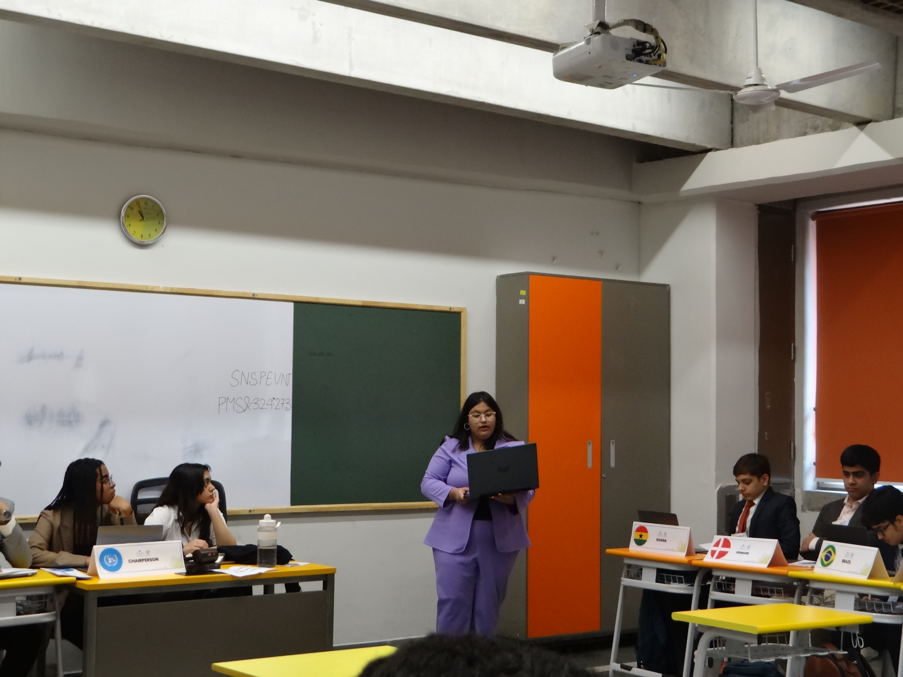
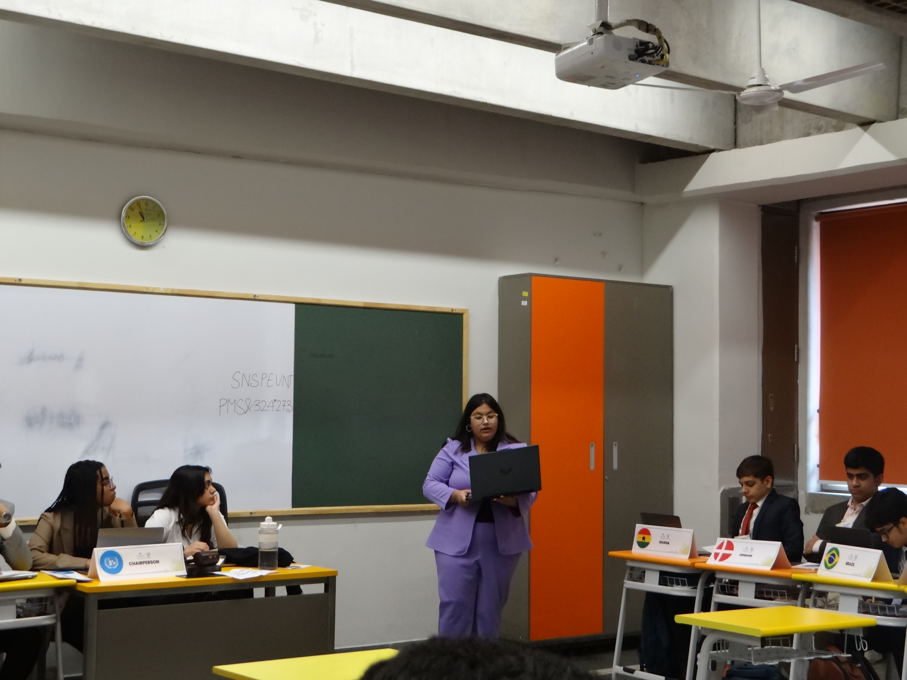

Day 1

Opening Ceremony
It is Not the End, Rather It Begins Here
The opening ceremony of the Model United Nations started with an unexpected twist. As the audience attempted a spirited chant for Perci, the Chair of one of the committees, their voices faltered, creating an awkward silence that quickly turned into a ripple of laughter. This lighthearted moment, though unplanned, set a unique and memorable tone for the ceremony, showcasing the vibrant energy and unyielding spirit of the youth gathered for this significant event. A mindfulness chant soon followed, grounding the audience in the present moment and preparing them for the profound journey ahead.
Navya Yadav, the Director General, then took the stage to address the gathering. She eloquently spoke about the profound journey of dialogue that MUN fosters, emphasizing its importance in today’s world. She announced the theme of this year's conference, "Global Voices, Climate Choices," reflecting on the past two months of dedication, hard work, and collaboration that went into making this event possible.
The introduction of Colonel Gopal Karunakaram, CEO of Shiv Nadar Schools, added a historical dimension to the ceremony. Proudly wearing his UN beret, he shared his experiences as a UN representative in the Indian Army three decades ago. He spoke about the universal aspirations observed even in war conditions—the desire for a better life for one’s family and the pursuit of joy. He emphasized that the new generation, with its focus on climate change, brings renewed hope, uniting people across the globe.
Colonel Karunakaram then conferred a token of appreciation upon the chief guest, Commissioner of Haryana Sanjay Joon. Commissioner Joon congratulated the students and delegates, highlighting the opportunity MUN provides to showcase their talents and hone their skills. He reminded everyone that confidence is paramount.
The keynote speaker, Mozaharul Alam, captivated the audience with his insights on diplomacy. He stressed the importance of not burning bridges, even when disagreements arise, and the power of moving forward together. He inspired the youth by affirming that they are the world's driving force and that individual actions, when combined, can lead to significant change.
The ceremony also featured a mesmerizing Kathak performance by the students, celebrating cultural heritage and artistic expression. Arnav Mittal, the Secretary-General, then took the stage. He spoke passionately about the climate crisis, emphasizing that it demands immediate action and is no longer a distant threat. He described the conference as a crucible of ideas, a melting pot where theory meets real-world challenges.
With a resounding declaration, "It is not the end, rather it begins here," Arnav brought the ceremony to a dramatic close. The gavel struck, echoing through the hall, marking the official start of the conference. In that moment, the air was charged with a sense of purpose and determination. The MUN had begun, and with it, a new chapter of hope and relentless action in the fight against climate change. The future was now in the hands of these young delegates, ready to make their voices heard and their choices count.
Written by - Arhaan Abbad Abidi
Some pictures from the day:


 
